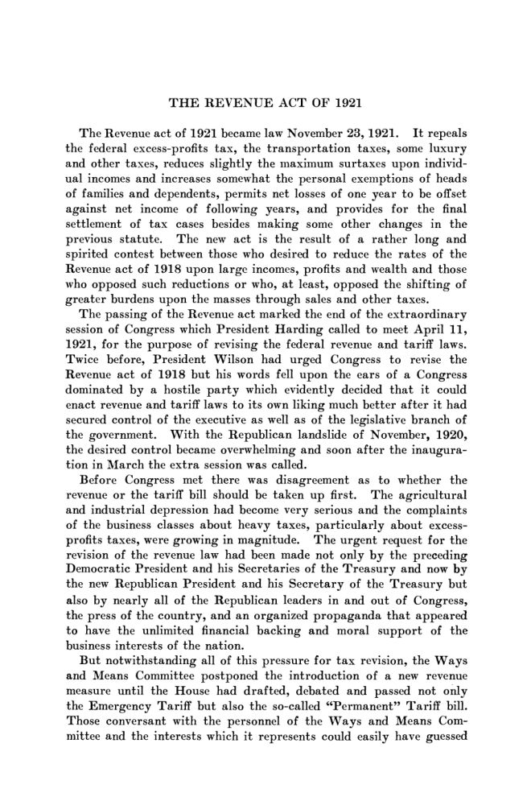

Hollander, a espiral do economista e a lei tributária de 1921
Leitura: 16 min
Hollander diz que os economistas pesaram pouco na guerra; Seligman pede o perdão das dívidas aliadas; Donham defende o método de casos; Blakey descreve a lei tributária de 1921.


Em 27 de dezembro de 1921, em Pittsburgh, Jacob H. Hollander, da Johns Hopkins University, encerrou seu mandato de presidente da American Economic Association com uma afirmação incômoda para a plateia: de toda a companhia dos economistas americanos, nenhum fora escolhido ou autorizado a exercer influência formativa e determinante na condução econômica da guerra. O discurso, “The Economist's Spiral”, abre a American Economic Review de março de 1922 e compara o lugar dos economistas nas guerras napoleônicas e na guerra recém-terminada.
O restante do número trata, em grande parte, das finanças públicas do pós-guerra. Edwin R. A. Seligman, da Columbia University, faz o balanço das finanças nacionais, seguido de uma discussão com John E. Rovensky, A. W. Krech, J. T. Holdsworth e E. L. Bogart; Roy G. Blakey, da University of Minnesota, descreve título por título a nova lei tributária. Entre os dois blocos há dois textos sobre ensino: Wallace B. Donham, de Harvard, defende o método de casos nas escolas de negócios, e o comitê da associação sobre o ensino de economia propõe um programa de estudos sociais para a escola secundária.
Por que os economistas pesaram tão pouco na guerra?
Jacob H. Hollander (Johns Hopkins University) · “The Economist's Spiral” · pp. 1–20
Hollander parte de uma ideia que, segundo ele, ganhara força depois da guerra: a de que os assuntos humanos seguem não uma trajetória, mas uma espiral, em que forças normais, atuando em ambientes essencialmente semelhantes, geram fenômenos semelhantes. Os paralelos entre os fatos econômicos das duas grandes guerras já tinham sido em parte explorados; ele se propõe a examinar o paralelo nas ideias econômicas e no lugar de quem as produz.
A primeira volta da espiral é britânica. Na primeira década da luta contra Napoleão, o economista, como tal, não foi nem proeminente nem importante. A virada veio com a desordem monetária que se seguiu à Restrição bancária de 1798, com o Bullion Report e os textos de Ricardo, e com a difusão do estudo, associada a Dugald Stewart e à Edinburgh Review. Nos cinco anos depois de Waterloo, afirma, a economia política teve uma influência prática nunca antes igualada: o imposto de renda foi revogado em 1816, a Câmara dos Comuns reverteu em 1819 a rejeição do Bullion Report e a petição dos comerciantes de 1820 virou bandeira do livre-comércio. Depois veio a queda, com o dogmatismo no lugar da investigação e a disputa no lugar da análise.
A segunda volta é americana. Em 1917, diz Hollander, a economia nos Estados Unidos era numerosa, organizada e presente em vários órgãos do governo. Ainda assim, não houve mobilização dos economistas, e as decisões ficaram com homens de negócios e técnicos. Ele examina quatro áreas: ajuste do trabalho, fixação de preços, provisão de receita e administração bancária. Nas duas últimas, o Tesouro preferiu tomar emprestado barato, apoiado no crédito bancário e em taxas preferenciais de redesconto do Federal Reserve, com o resultado, segundo ele, de inflação de depósitos e notas, alta do custo de vida e especulação.
“O economista como cientista alerta foi submerso no economista como cidadão dócil.” (“the economist as alert scientist was submerged in the economist as docile citizen”)
Depois do armistício, prossegue, os economistas recuperaram a voz: mostraram que a guerra fora financiada em grande parte com crédito bancário, criticaram o atraso na alta dos juros e os impostos de guerra mantidos na paz. Se o paralelo valer, virão prestígio e influência. A última fase da espiral seria a recaída no formalismo, que, para Hollander, só se evita com coleta paciente de dados, hipóteses cautelosas e verificação rigorosa.
As dívidas dos aliados devem ser cobradas?
Edwin R. A. Seligman (Columbia University) · “The State of Our National Finances” · pp. 21–41
Seligman, em trabalho lido na mesma reunião de Pittsburgh, em 28 de dezembro de 1921, começa lembrando que finanças públicas e privadas se afetam mutuamente e destaca dois fatos do momento: a deflação e a situação do crédito. O país, diz, foi salvo na guerra por duas circunstâncias, a 16ª emenda, que permitiu tributar a renda, e a lei do Federal Reserve, que permitiu expandir o crédito sem recorrer ao papel-moeda. Como segunda reforma, propõe uma campanha a favor das agências bancárias, para que trinta mil bancos concorrentes deixem de expandir o crédito quando deveriam restringi-lo.
Na política de guerra, aponta dois erros: a recusa em pagar juros de mercado nos empréstimos do governo, que aumentou a dependência dos bancos e a inflação, e o peso exagerado dos impostos sobre a riqueza, com isenção de títulos e um imposto sobre lucros extraordinários desigual desde o início. Do lado da despesa, o gasto passara de cerca de US$ 1 bilhão antes da guerra para mais de US$ 4 bilhões; o fundo de amortização compulsório da dívida deveria ser mais elástico.
A parte mais enfática trata das dívidas dos aliados. Se a guerra foi um empreendimento comum, argumenta, não há razão para separar a contribuição financeira da humana; os Estados Unidos, que lucraram durante dois anos e meio antes de entrar no conflito, seriam, num ajuste equitativo, devedores e não credores. E, mesmo que a dívida fosse justa, cobrá-la seria um erro econômico: o pagamento em ouro reacenderia a inflação, e o pagamento em mercadorias destruiria mercados de exportação.
“Não se aumenta o comércio empobrecendo os fregueses.” (“You cannot increase trade by impoverishing your customers”)
Na receita, Seligman rejeita o imposto geral sobre vendas e a isenção da poupança, e propõe três caminhos para baixar as sobretaxas: acabar com os títulos isentos, substituir o imposto de renda das sociedades por um imposto sobre os lucros de todos os negócios e elevar o imposto federal sobre heranças. Fecha com um orçamento futuro de bem menos de US$ 3 bilhões por ano, coberto por tarifa, impostos sobre fumo, álcool e automóveis, selos, heranças, o imposto sobre negócios e um imposto de renda mais leve.
Cancelar, adiar ou cobrar?
John E. Rovensky, A. W. Krech, J. T. Holdsworth e E. L. Bogart · “The State of Our National Finances: Discussion” · pp. 41–52
Quatro debatedores comentam o trabalho de Seligman, e o tema que os separa é o mesmo: as dívidas dos aliados. John E. Rovensky começa discordando das agências bancárias. A inflação cresce, diz, enquanto banqueiros e industriais acreditam na alta dos preços, e menos bancos não mudariam esse juízo; o desenvolvimento do país deveu-se em boa parte ao banqueiro do interior. Sobre as dívidas, alinha-se a Seligman: lançar como empréstimo o equipamento de um regimento francês e como despesa o envio de um regimento americano seria pura contabilidade. Acrescenta que cobrar tarifa de importação enquanto se exige o pagamento equivaleria a cobrar ingresso do devedor que vem pagar.
A. W. Krech, que fala como banqueiro, duvida que o ciclo econômico seja fenômeno cientificamente estabelecido e considera a dívida honrosa, não injusta. Propõe um feriado durante o qual a dívida seria tratada como inexistente, para que a questão do cancelamento volte a ser discutida em ambiente mais calmo. Cita Walter Rathenau para mostrar que reparações pagas em mercadorias também prejudicam os países que as recebem.
J. T. Holdsworth concorda com Seligman no plano interno, mas não nas dívidas. Pergunta se, pela mesma lógica, os portadores de Liberty bonds não deveriam cancelar seus créditos contra o próprio governo, e lembra que a Grã-Bretanha acertara começar a pagar 50 milhões de libras por ano. Prevê o pagamento sob um arranjo elástico, desde que o Congresso não levante tarifas cada vez mais altas, e aceita o imposto sobre vendas como medida temporária.
E. L. Bogart defende o cancelamento por razões econômicas, do ponto de vista dos devedores: sem ouro, não poderão restabelecer o padrão-ouro, e seu trabalho e capital rendem mais na reconstrução do que no pagamento aos Estados Unidos. Quer, porém, que o cancelamento seja gradual e sirva de instrumento de reforma, em troca de orçamentos equilibrados, do fim das emissões de papel-moeda e do uso dos recursos na economia, e não em armamentos.
O método de casos do direito serve para ensinar negócios?
Wallace B. Donham (Graduate School of Business Administration, Harvard University) · “Business Teaching by the Case System” · pp. 53–65
Donham parte de uma observação. Há cinquenta anos, Langdell introduziu na Harvard Law School o ensino baseado em decisões dos tribunais; hoje esse é o método ortodoxo das melhores escolas de direito, mas ele nunca se firmou fora delas. Donham quer saber se as limitações são fundamentais ou apenas práticas e, para o ensino de negócios, conclui que são práticas.
Decompõe o método em cinco elementos: um vasto acervo de decisões publicadas; uma classificação sistemática da matéria; coletâneas de casos; a estrutura típica do caso, com fatos, questão, opinião e decisão; e o desenvolvimento dos princípios pela discussão, do concreto para o abstrato. Todos, diz, já existem ou podem ser supridos no ensino de negócios, exceto o primeiro. O problema passa a ser obter os fatos de situações reais, classificá-los e apresentá-los para discussão.
Esses casos não estão prontos em biblioteca alguma. Precisam ser recolhidos com os próprios empresários, por professores ou por agentes de pesquisa pagos, e disfarçados para que a empresa não seja identificada. Diferem dos casos jurídicos porque não chegam filtrados por advogados e juízes, em geral não trazem a decisão tomada e admitem mais de uma solução. Devem incluir fatos irrelevantes, para treinar a seleção, e muito do que o empresário dá por sabido.
Para o risco de o aluno perder a visão de conjunto, Donham descreve as soluções em uso: um caso muito complexo entregue à turma do primeiro ano logo na chegada, que depende de boa parte das disciplinas, e o curso de Business Policy no segundo ano. Ao professor cabe encerrar cada discussão com um resumo claro das razões que lhe parecem decisivas. Conclui que o método é tão desejável no ensino de negócios quanto no de direito, e que a aula por casos se parece com uma reunião de negócios.
O que a escola secundária deveria ensinar sobre a vida em sociedade?
Comitê da American Economic Association sobre o ensino de economia (L. C. Marshall, presidente) · “A Proposed Program of Social Studies in the Secondary Schools” · pp. 66–74
O texto não tem autor individual: é uma proposta do comitê da American Economic Association sobre o ensino de economia, apresentada como base de discussão para os sócios. O comitê é presidido por L. C. Marshall e inclui, entre outros, E. L. Bogart, E. E. Day e W. H. Kiekhofer. A proposta trata sobretudo da junior high school, porque o comitê espera que a organização 6-3-3 domine o ensino secundário e porque a nova etapa permite um plano pouco preso ao costume.
O comitê enumera oito considerações. O objetivo dos estudos sociais seria dar aos jovens consciência do que significa viver junto em sociedade organizada, apreço por como se vive junto e compreensão das condições para viver bem. A pergunta não deveria ser como pôr os estudos sociais no currículo, mas como organizar o currículo em torno de objetivos sociais, com ao menos uma unidade de estudo social em cada ano. A disputa entre história, economia, governo e sociologia deveria ser deixada de lado; o centro seria a fisiologia, e não a patologia, da vida social; e o programa deveria considerar o ensino vocacional e a saída de alunos em certas séries.
O plano avança por etapas. Na sétima série, as bases geográficas do desenvolvimento dos Estados Unidos e um levantamento de tipos de organização social, de sociedades simples aos efeitos transformadores do conhecimento científico. Na oitava, a abertura do mundo ao uso do homem e um levantamento de ocupações, apresentado em termos funcionais. Na nona, a história dos Estados Unidos centrada na cidadania e os princípios da organização econômica, política e social. Para a senior high school, o comitê sugere cursos sobre a organização financeira e de mercado da sociedade, a posição do trabalhador, contabilidade, direito comercial e teorias do valor e da distribuição.
O que mudou, de fato, com a lei tributária de 1921?
Roy G. Blakey (University of Minnesota) · “The Revenue Act of 1921” · pp. 75–108
A lei tributária de 1921 virou lei em 23 de novembro de 1921, e Blakey resume logo de saída o que ela faz: revoga o imposto federal sobre lucros extraordinários e os impostos sobre transporte, elimina alguns impostos sobre luxo, reduz um pouco as sobretaxas máximas sobre a renda individual, eleva as isenções de chefes de família e dependentes, permite compensar o prejuízo de um ano com a renda dos anos seguintes e cria a solução definitiva de processos tributários.
O pano de fundo é uma disputa entre os que queriam baixar as alíquotas da lei de 1918 sobre grandes rendas, lucros e riqueza e os que se opunham, ou ao menos rejeitavam transferir carga à maioria por meio de impostos sobre vendas. O secretário do Tesouro, Mellon, propusera reduzir a alíquota combinada máxima de 73% para 40% e, depois, 33%. A Câmara aprovou sobretaxa máxima de 32%; no Senado, o bloco agrícola, de republicanos do Oeste e democratas, impôs 50%, e a Câmara acabou instruindo seus negociadores a aceitar.
Nas empresas, o imposto sobre lucros extraordinários foi substituído por uma alta do imposto de renda das sociedades de 10% para 12,5%. As propostas do senador Smoot de imposto sobre vendas foram rejeitadas uma a uma. Os ganhos de capital podem ser tributados a 12,5%, o que, observa o autor, só beneficia quem tem renda líquida acima de US$ 31 mil. As alíquotas do imposto sobre heranças ficaram como estavam, embora o Senado tivesse votado dobrar as máximas.
“o atual bebê da receita, apenas vestido de rosa em vez de vermelho” (“the present revenue baby merely dressed in pink instead of red”)
A frase é do senador Smoot, e Blakey a usa para mostrar que a lei repete de perto a de 1918. Na conclusão, considera melhorias reais a solução definitiva de processos e a compensação de prejuízos, critica a exclusão da minoria das sessões do Comitê de Meios e Recursos e a anulação de votos do Senado na comissão de conferência, e julga que alíquotas combinadas de 40% e 33%, como propunha Mellon, seriam suficientemente altas.
O que mais há na edição?
As resenhas assinadas incluem Principles of Economics, de F. M. Taylor, por Charles E. Persons; Il Fallimento della Politica Annonaria, de Umberto Ricci, por Robert F. Foerster; The American Railroad Problem, de I. Leo Sharfman, por Edgar J. Rich; Marketing Agricultural Products, de Benjamin Horace Hibbard, por John D. Black; The Fundamentals of Accounting, de William Morse Cole, por J. Hugh Jackson; Investment Analysis, de Walter Edwards Lagerquist, por J. F. Ebersole; e Tariffs: A Study in Method, de T. E. G. Gregory, por F. W. Taussig. As listas de livros novos trazem resenhas curtas, entre elas as de livros de Carver, Taussig, Gilbert e Pogue, Hillquit e Thornton. Abraham Berglund resume o relatório da Federal Trade Commission sobre custos e preços de calçados e couro, e as notas anunciam que o manuscrito das Notes on Malthus, de Ricardo, foi recuperado e será editado por Hollander e T. E. Gregory.
Na minha leitura
Na minha leitura, o número de março de 1922 é um exercício de contabilidade do pós-guerra feito por três ângulos. Hollander pergunta quanto da política econômica de guerra seguiu a análise e quanto seguiu a conveniência; Seligman monta um orçamento normal e verifica que impostos podem cobri-lo sem tributar o necessário; Blakey mostra, voto a voto, como uma reforma tributária sai do Congresso diferente do que entrou.
O ponto comum é a distância entre o desenho de um tributo e seu efeito. A isenção de títulos públicos, que aparece em Seligman, em Holdsworth e em Blakey, ilustra bem: uma sobretaxa alta perde base quando existe um ativo isento ao lado, e a capitalização do imposto no preço do título compensa a perda só em parte. Donham e o comitê de ensino, por caminhos diferentes, tratam do mesmo problema de método: como treinar alguém para raciocinar a partir de fatos concretos, e não apenas a partir de princípios recebidos.
Glossário
- Sobretaxa (surtax)
- imposto adicional progressivo sobre as faixas mais altas da renda, somado ao imposto normal.
- Imposto sobre lucros extraordinários
- excess-profits tax: tributo sobre o lucro acima de uma taxa considerada normal sobre o capital investido.
- Certificado de endividamento
- título de curto prazo do Tesouro americano, emitido à espera de empréstimos de longo prazo ou de impostos.
- Redesconto
- empréstimo do banco central a bancos, com títulos como garantia; sua taxa influencia o custo do crédito.
- Branch banking
- sistema em que um banco opera por meio de muitas agências, em vez de muitos bancos independentes.
- Título isento
- título cujos juros não pagam imposto de renda, como os estaduais e municipais nos Estados Unidos de 1921.
- Método de casos
- ensino baseado na discussão de situações reais, do particular para o princípio geral.
Artigos (6)
- The Economist's Spiral — Jacob H. Hollander (Johns Hopkins University) (pp. 1–20) · resenha acima · comentário completo · JSTOR
- The State of Our National Finances — Edwin R. A. Seligman (Columbia University) (pp. 21–41) · resenha acima · JSTOR
- The State of Our National Finances: Discussion — John E. Rovensky, A. W. Krech, J. T. Holdsworth e E. L. Bogart (pp. 41–52) · resenha acima · JSTOR
- Business Teaching by the Case System — Wallace B. Donham (Graduate School of Business Administration, Harvard University) (pp. 53–65) · resenha acima · JSTOR
- A Proposed Program of Social Studies in the Secondary Schools — Comitê da American Economic Association sobre o ensino de economia (L. C. Marshall, presidente) (pp. 66–74) · resenha acima · JSTOR
- The Revenue Act of 1921 — Roy G. Blakey (University of Minnesota) (pp. 75–108) · resenha acima · comentário completo · JSTOR
Resenhas (7)
- Principles of Economics, de F. M. Taylor — Charles E. Persons (pp. 109–111). Resenha do manual de Taylor, fruto de seu ensino experimental na University of Michigan. JSTOR
- Il Fallimento della Politica Annonaria, de Umberto Ricci — Robert F. Foerster (pp. 115–116). Resenha do livro de Ricci sobre o fracasso da política de abastecimento na Itália durante a guerra. JSTOR
- The American Railroad Problem, a Study in War and Reconstruction, de I. Leo Sharfman — Edgar J. Rich (pp. 127–129). Resenha do estudo de Sharfman sobre as ferrovias americanas na guerra e na reconstrução. JSTOR
- Marketing Agricultural Products, de Benjamin Horace Hibbard — John D. Black (pp. 130–132). Resenha do livro de Hibbard sobre a comercialização de produtos agrícolas. JSTOR
- The Fundamentals of Accounting, de William Morse Cole — J. Hugh Jackson (pp. 134–137). Resenha do manual de contabilidade de Cole. JSTOR
- Investment Analysis, de Walter Edwards Lagerquist — J. F. Ebersole (pp. 137–139). Resenha do tratado de Lagerquist sobre análise de investimentos e títulos. JSTOR
- Tariffs: A Study in Method, de T. E. G. Gregory — F. W. Taussig (pp. 152–153). Resenha do livro de Gregory sobre as formas legislativas e administrativas das tarifas. JSTOR
Novos livros (16)
- New Books (pp. 111–115). Obras gerais e teoria: resenhas curtas de livros de Carver, Franklin, Roscher e Taussig e títulos novos. JSTOR
- New Books (pp. 117–124). História econômica e geografia: resenhas curtas e lista de títulos novos. JSTOR
- New Books (pp. 124–126). Agricultura, mineração, florestas e pesca: inclui America's Power Resources, de Gilbert e Pogue, por I. Lippincott. JSTOR
- New Books (pp. 126). Indústrias manufatureiras: lista de títulos novos. JSTOR
- New Books (pp. 129–130). Transporte e comunicações: lista de títulos novos. JSTOR
- New Books (pp. 132–134). Comércio e crises comerciais: lista de títulos novos. JSTOR
- New Books (pp. 139–145). Contabilidade, métodos de negócios e investimentos: resenhas curtas de livros de Kitson, Lincoln, Scott e Hayes, Wall e Watts e títulos novos. JSTOR
- New Books (pp. 145–146). Capital e organização capitalista: lista de títulos novos. JSTOR
- New Books (pp. 146–148). Trabalho e organizações trabalhistas: inclui resenha de Public Opinion and the Steel Strike of 1919, por G. M. Janes. JSTOR
- New Books (pp. 149–152). Moeda, preços, crédito e bancos: lista de títulos novos. JSTOR
- New Books (pp. 153–156). Finanças públicas, tributação e tarifa: inclui resenhas de livros de Einaudi e de Thornton. JSTOR
- New Books (pp. 156). População e migração: lista de títulos novos. JSTOR
- New Books (pp. 156–159). Problemas sociais e reformas: lista de títulos novos. JSTOR
- New Books (pp. 159–160). Seguros e pensões: lista de títulos novos. JSTOR
- New Books (pp. 160–163). Socialismo e cooperativas: resenhas curtas de livros de Gompers e Walling, Hillquit e Le Rossignol, entre outros. JSTOR
- New Books (pp. 163–164). Estatística e seus métodos: lista de títulos novos. JSTOR
Documentos, periódicos e notas (3)
- Periodicals (pp. 165–194). Resumos de artigos de periódicos, por área. JSTOR
- Documents, Reports, and Legislation — Abraham Berglund (pp. 195–201). Inclui o resumo do relatório da Federal Trade Commission sobre custos e preços de calçados e couro. JSTOR
- Notes (pp. 202–208). Novos sócios, nomeações e o anúncio da recuperação das Notes on Malthus, de Ricardo. JSTOR
Fontes
- The Economist's Spiral (pp. 1–20). JSTOR · Internet Archive (PDF)
- The State of Our National Finances (pp. 21–41). JSTOR · Internet Archive (PDF)
- The State of Our National Finances: Discussion (pp. 41–52). JSTOR · Internet Archive (PDF)
- Business Teaching by the Case System (pp. 53–65). JSTOR · Internet Archive (PDF)
- A Proposed Program of Social Studies in the Secondary Schools (pp. 66–74). JSTOR · Internet Archive (PDF)
- The Revenue Act of 1921 (pp. 75–108). JSTOR · Internet Archive (PDF)
- [untitled] The American Economic Review, (1922-03-01), pages 109-111 (pp. 109–111). JSTOR · Internet Archive (PDF)
- New Books (pp. 111–115). JSTOR · Internet Archive (PDF)
- [untitled] The American Economic Review, (1922-03-01), pages 115-116 (pp. 115–116). JSTOR · Internet Archive (PDF)
- New Books (pp. 117–124). JSTOR · Internet Archive (PDF)
- New Books (pp. 124–126). JSTOR · Internet Archive (PDF)
- New Books (pp. 126). JSTOR · Internet Archive (PDF)
- [untitled] The American Economic Review, (1922-03-01), pages 127-129 (pp. 127–129). JSTOR · Internet Archive (PDF)
- New Books (pp. 129–130). JSTOR · Internet Archive (PDF)
- [untitled] The American Economic Review, (1922-03-01), pages 130-132 (pp. 130–132). JSTOR · Internet Archive (PDF)
- New Books (pp. 132–134). JSTOR · Internet Archive (PDF)
- [untitled] The American Economic Review, (1922-03-01), pages 134-137 (pp. 134–137). JSTOR · Internet Archive (PDF)
- [untitled] The American Economic Review, (1922-03-01), pages 137-139 (pp. 137–139). JSTOR · Internet Archive (PDF)
- New Books (pp. 139–145). JSTOR · Internet Archive (PDF)
- New Books (pp. 145–146). JSTOR · Internet Archive (PDF)
- New Books (pp. 146–148). JSTOR · Internet Archive (PDF)
- New Books (pp. 149–152). JSTOR · Internet Archive (PDF)
- [untitled] The American Economic Review, (1922-03-01), pages 152-153 (pp. 152–153). JSTOR · Internet Archive (PDF)
- New Books (pp. 153–156). JSTOR · Internet Archive (PDF)
- New Books (pp. 156). JSTOR · Internet Archive (PDF)
- New Books (pp. 156–159). JSTOR · Internet Archive (PDF)
- New Books (pp. 159–160). JSTOR · Internet Archive (PDF)
- New Books (pp. 160–163). JSTOR · Internet Archive (PDF)
- New Books (pp. 163–164). JSTOR · Internet Archive (PDF)
- Periodicals (pp. 165–194). JSTOR · Internet Archive (PDF)
- Documents, Reports, and Legislation (pp. 195–201). JSTOR · Internet Archive (PDF)
- Notes (pp. 202–208). JSTOR · Internet Archive (PDF)
- Sumário da edição no JSTOR: The American Economic Review, vol. 12, nº 1.
Documento em domínio público (EUA, publicado antes de 1931), via JSTOR Early Journal Content e Internet Archive. Resumo e comentário do autor deste site, sem afiliação com a American Economic Association. Encontrou um erro? Escreva: a correção é publicada no próprio texto, com data.
← Nº 173 · Quanto um homem pode dar? O concurso Karelsen de 1921 Nº 175 · Pittsburgh, 1921: a crise de 1920 e a ambição de domar o ciclo →